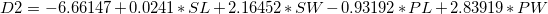
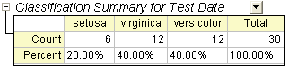

Diskriminanzanalyse
Discriminant-Analysis
Zusammenfassung
Der Datensatz der Schwertlilie oder Fishers Schwertliliendatensatz ist ein multivariater Datensatz, der von Sir Ronald Aylmer Fisher 1936 eingeführt wurde. Dieser Datensatz wird häufig für illustrative Zwecke in vielen Klassifizierungssystemen verwendet. Der Datensatz besteht aus fünfzig Stichproben von je drei Schwertlilienarten (Iris setosa, Iris virginica und Iris versicolor). Es wurden vier Merkmale von jeder Stichprobe in Zentimetern gemessen, die Länge und die Breite der Kelchblätter und Blütenblätter. Um die Art basierend auf diesen vier Merkmalen zu identifizieren, kann die Diskriminanzanalyse verwendet werden.
Wir verwenden eine Zufallsstichprobe von 120 Datenzeilen, um ein Diskriminanzanalysemodell zu erstellen, und überprüfen dann die Genauigkeit des Modells mit den verbleibenden 30 Zeilen.
Origin-Version mind. erforderlich: 8.6 SR0
Diskriminanzanalyse
- Öffnen Sie ein neues Projekt oder eine neue Arbeitsmappe. Importieren Sie die Datendatei \Samples\Statistics\Fisher's Iris Data.dat.
- Markieren Sie die Spalten A bis D. Wählen Sie Statistik: Multivariate Analyse: Diskriminanzanalyse, um den Dialog Diskriminanzanalyse auf der Registerkarte Eingabedaten zu öffnen. Die Spalten A bis D werden automatisch zu den Schulungsdaten hinzugefügt.
- Klicken Sie auf die dreieckige Schaltfläche
 neben der Gruppe für Schulungsdaten und wählen Sie E(Y):Species im Kontextmenü.
neben der Gruppe für Schulungsdaten und wählen Sie E(Y):Species im Kontextmenü.
- Klicken Sie auf die Registerkarte Eigenschaften und aktivieren Sie das Kontrollkästchen Koeffizienten der Diskriminanzfunktion. Erweitern Sie den Zweig Kanonische Diskriminanzanalyse und aktivieren Sie das Kontrollkästchen Kanonische Koeffizienten. Akzeptieren Sie alle anderen Standardeinstellungen des Dialogs und klicken Sie auf OK.
Ergebnisse interpretieren
Klicken Sie auf die Registerkarte Bericht der Diskriminanzanalyse.
Kanonische Diskriminanzanalyse
Der Zweig Kanonische Diskriminanzanalyse wird verwendet, um die Diskriminanzfunktionen für das Modell zu erstellen.
- Aus der Tabelle der Nicht standardisierten kanonischen Koeffizienten können die kanonischen Diskriminanzfunktionen konstruiert werden.

- 
- wobei SL = Länge der Kelchblätter, SW = Breite der Kelchblätter, PL = Länge der Blütenblätter, PW = Breite der Blütenblätter
- Die Tabelle der Eigenwerte verdeutlicht die Wichtigkeit der obigen kanonischen Diskriminanzfunktionen. Die erste Funktion kann 99,12% der Varianz und die zweite die verbleibenden 0,88% erklären.
-
- Die Tabelle Wilks Lambda-Test zeigt, dass die Diskriminanzfunktionen signifikant die Zugehörigkeit der Gruppe erklären. Wir können sehen, dass beide Werte in der Spalte Sig kleiner als 0,05 sind. Beide Werte sollten daher in die Diskriminanzanalyse eingeschlossen werden.
-
Klassifizierung
- Die Tabelle Klassifizierungszusammenfassung für Schulungsdaten kann zum Auswerten des Diskriminanzmodells verwendet werden. Der Tabelle kann entnommen werden, dass die Klassifizierung in den Gruppen setosa 100% korrekt ist. Für versicolor sind nur zwei Beobachtungen falsch als virginica klassifiziert, und für virginica ist nur eine falsch klassifiziert. Die Fehlerrate beträgt nur 2,00%. Das Modell ist gut.
- Sie können weiterhin zum Blatt Training Result1 wechseln, um zu sehen, welche Beobachtung falsch klassifiziert wurde. In dem Blatt können Sie die A-posteriori-Zugehörigkeitswahrscheinlichkeiten sehen, die aus dem Diskriminanzmodell berechnet wurden, und welcher Gruppe die Beobachtung zugewiesen wurde.
- Für die 84. Beobachtung ist die A-posteriori-Wahrscheinlichkeit (virginica) von 0,85661 der maximale Wert. Das heißt, die 84. Beobachtung wird der Gruppe virginica zugewiesen (bei einer Wahrscheinlichkeit von 85,7%).
- In den Quelldaten ist die 84. Beobachtung jedoch in der Gruppe versicolor. Diese Beobachtung ist also durch das Modell falsch klassifiziert.
Modellvalidierung
Die Modellvalidierung kann verwendet werden, um die Stabilität der Klassifizierer der Diskriminanzanalysis sicherzustellen.
Es gibt zwei Methoden, eine Modellvalidierung durchzuführen.
- Kreuzvalidierung:
- Bei der Kreuzvalidierung werden die Schulungsdaten wie Testdaten behandelt. Schließen Sie sie aus den Schulungsdaten aus, um zu beurteilen, für welche Gruppe sie klassifiziert werden sollten, und prüfen Sie dann, ob die Klassifizierung korrekt ist oder nicht.
- Teilgruppenvalidierung:
- Im Normalfall teilen wir die Beobachtungen zufällig in Teildatensätze. Der erste Teildatensatz wird für die Schätzung des Diskriminanzmodells (Schulungsdatensatz) verwendet und der zweite für das Testen der Zuverlässigkeit der Ergebnisse (Testdatensatz).
Analysedaten vorbereiten
Die Daten werden in einer zufälligen Reihenfolge sortiert, wobei die ersten 120 Datenzeilen dann als Schulungsdaten und die letzten 30 Datenzeilen als Testdaten verwendet werden.
- Wechseln Sie zurück zum Arbeitsblatt Fisher's Iris Data.
- Fügen Sie eine neue Spalte hinzu und füllen Sie die Spalte mit Normalverteilten Zufallszahlen.
- Markieren Sie die neu hinzugefügte Spalte. Klicken Sie mit der rechten Maustaste und wählen Sie Worksheet sortieren: Aufsteigend im Kontextmenü.
| Hinweise: Origin erzeugt jedes Mal unterschiedliche Zufallsdaten, die wiederum immer zu unterschiedlichen Ergebnissen führen. Um die gleichen Ergebnisse zu erhalten, wie sie in diesem Tutorial gezeigt werden, können Sie das Projekt Tutorial Data.opj im Ordner Samples öffnen und im Projekt Explorer zu dem Unterordner Discriminant Analysis navigieren. Verwenden Sie dann die Daten der Spalte (F) im Arbeitsblatt Fisher's Iris Data, die einen zuvor erzeugten Datensatz von Zufallszahlen darstellen.
|
Diskriminanzanalyse ausführen
- Markieren Sie die Spalten A bis D.
- Wählen Sie Statistik: Multivariate Analyse: Diskriminanzanalyse, um den Dialog Diskriminanzanalyse zu öffnen.
- Um die ersten 120 Zeilen der Spalten A bis D als Schulungsdaten festzulegen, klicken Sie auf die dreieckige Schaltfläche neben den Schulungsdaten und wählen Sie im Kontextmenü Spalten wählen.
- Klicken Sie im unteren Bedienfeld des Dialogs Spaltenbrowser auf die Schaltfläche .... Legen Sie den Datenbereich auf 1 bis 120 fest. Klicken Sie auf OK.
- Um die ersten 120 Zeilen von Col(E) als Gruppe der Schulungsdaten festzulegen, klicken Sie auf die dreieckige Schaltfläche neben der Gruppe für Schulungsdaten und wählen Sie im Kontextmenü E(Y): Species. Klicken Sie dann erneut auf die dreieckige Schaltfläche für die Gruppe der Schulungsdaten, wählen Sie Spalten auswählen im Kontextmenü und legen Sie den Bereich mit dem Spaltenbrowser auf 1 bis 120 fest. Klicken Sie auf OK.
- Aktivieren Sie das Kontrollkästchen Zugehörigkeit für Testdaten prognostizieren. Klicken Sie auf die interaktive Schaltfläche Testdaten
 . Der Dialog wird minimiert. Markieren Sie die Spalten A bis D im Arbeitsblatt. Klicken Sie auf die Schaltfläche im minimierten Dialog, um es wiederherzustellen. Klicken Sie dann auf das dreieckige Schaltfläche , um den Spaltenbrowser zu öffnen, indem Sie im Kontextmenü Spalten wählen wählen. Klicken Sie auf die Schaltfläche ... im unteren Bedienfeld und legen Sie den Bereich auf 121 bis 150 fest.
. Der Dialog wird minimiert. Markieren Sie die Spalten A bis D im Arbeitsblatt. Klicken Sie auf die Schaltfläche im minimierten Dialog, um es wiederherzustellen. Klicken Sie dann auf das dreieckige Schaltfläche , um den Spaltenbrowser zu öffnen, indem Sie im Kontextmenü Spalten wählen wählen. Klicken Sie auf die Schaltfläche ... im unteren Bedienfeld und legen Sie den Bereich auf 121 bis 150 fest.
- Klicken Sie auf die Registerkarte Einstellungen und aktivieren Sie das Kontrollkästchen Kreuzvalidierung. Klicken Sie auf OK.
Kreuzvalidierung
- Gehen Sie zu Blatt Discriminant Analysis Report1. Die Tabelle Zusammenfassung der Kreuzvalidierung für Schulungsdaten beinhaltet die Prognosefehlerrate durch die Klassifizierung jedes Falls, während er aus den Berechnungen des Modells herausgelassen wird. Diese Methode ist jedoch noch immer "optimistischer" als die Teilgruppenvalidierung.
Teilgruppenvalidierung
- Die Tabelle Klassifizierungszusammenfassung für Testdaten fasst zusammen, wie Testdaten klassifiziert sind.
- 
- Kopieren Sie im Arbeitsblatt Fisher's Iris Data die letzten 30 Zeilen (121 bis 150) der Spalte Col(E): Species.
- Fügen Sie im Arbeitsblatt Test Result eine Spalte Col(E) hinzu. Fügen Sie die kopierten Werte in die neue Spalte ein.
- Fügen Sie eine neue Spalte Col(F) zum Arbeitsblatt hinzu, klicken Sie mit der rechten Maustaste auf sie und wählen Sie Spaltenwerte errechnen im Kontextmenü. Geben Sie im geöffneten Dialog Compare(col(A),col(E)) ein und klicken Sie auf OK.
-
- Keiner der 30 Werte ist 0. Das bedeutet, dass die Fehlerrate der Testdaten gleich 0 ist. Unser Diskriminanzmodell ist also gut.
A-Priori-Zugehörigkeitswahrscheinlichkeiten korrigieren
Die Diskriminanzanalyse nimmt an, dass die A-priori-Zugehörigkeitswahrscheinlichkeiten der Gruppen identifizierbar sind. Wenn die Größen der Grundgesamtheit der Gruppe nicht gleich sind, unterscheiden sich die A-priori-Zugehörigkeitswahrscheinlichkeiten möglicherweise. Sie können die Option Proportional zur Gruppengröße für die A-priori-Zugehörigkeitswahrscheinlichkeit in diesem Fall verwenden.
- Wechseln Sie zu Blatt Discrim2. Zeile A-priori der Tabelle Fehlerrate im Zweig Klassifizierungszusammenfassung der Schulungsdaten weist die A-priori-Zugehörigkeitswahrscheinlichkeit in Gruppen auf. Es wird angenommen, dass ein Fall gleichermaßen wahrscheinlich zu jeder der drei Gruppen gehören könnte. Das Anpassen der A-Priori-Zugehörigkeitswahrscheinlichkeiten entsprechend der Gruppengröße kann die gesamte Klassifizierungsrate verbessern.
- Klicken Sie auf die Schaltfläche
 und wählen Sie im Kontextmenü Parameter ändern. Wählen Sie Proportional zur Gruppengröße unter A-priori-Zugehörigkeitswahrscheinlichkeit. Klicken Sie auf OK.
und wählen Sie im Kontextmenü Parameter ändern. Wählen Sie Proportional zur Gruppengröße unter A-priori-Zugehörigkeitswahrscheinlichkeit. Klicken Sie auf OK.
- Die Klassifizierungsfehlerrate beträgt nun 2,50% und ist damit besser als 2,63%, der Fehlerrate bei gleichen A-priori-Zugehörigkeitswahrscheinlichkeiten.